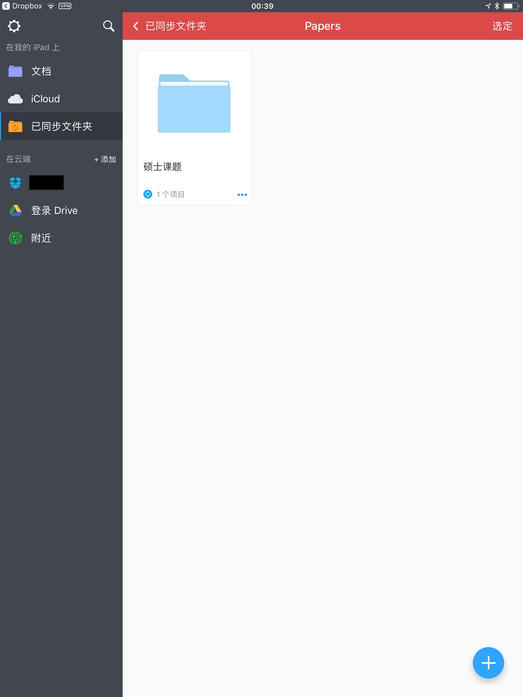
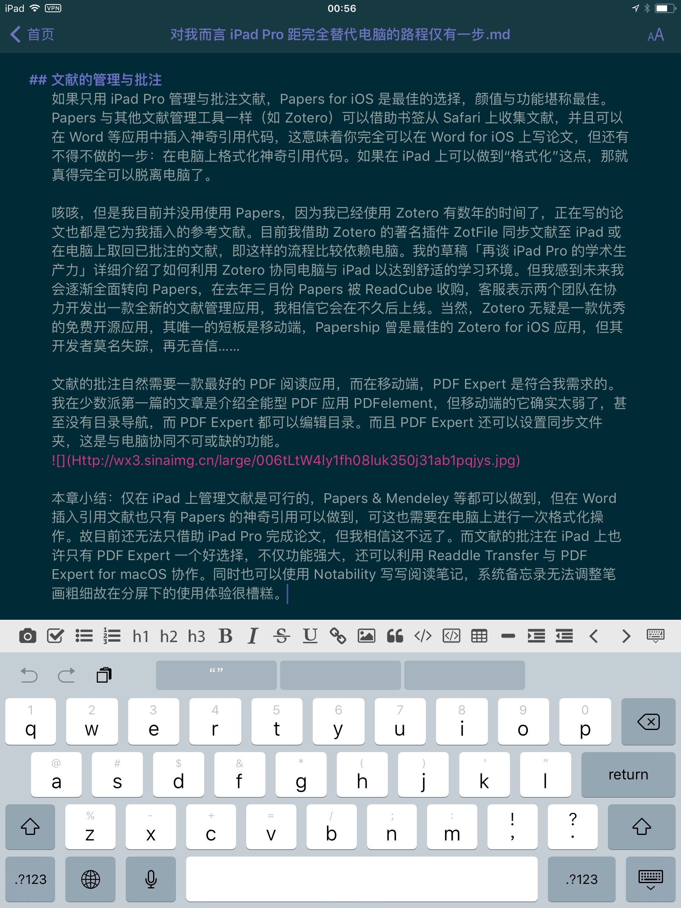
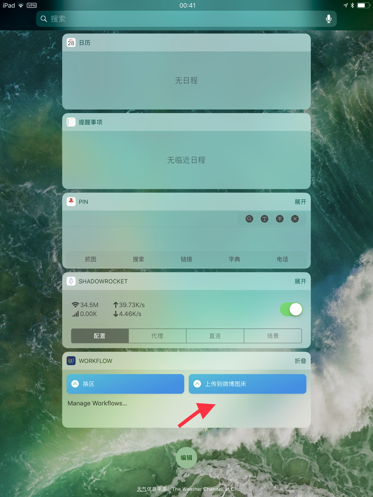
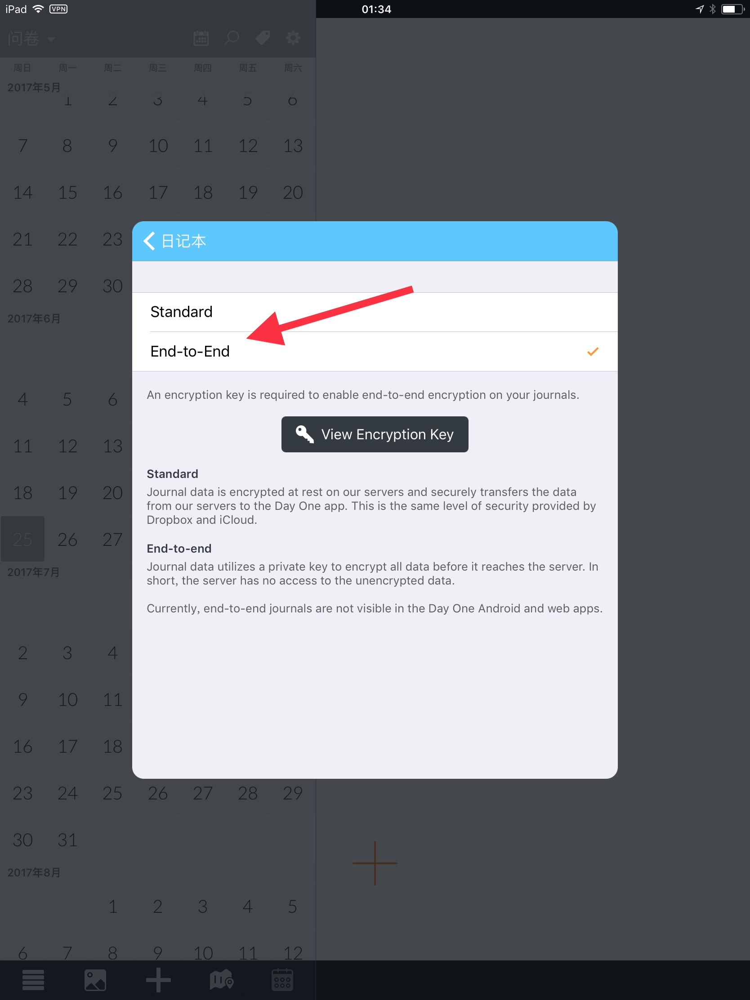

本文被少数派精选：点此查看
我在 6.13 收到 10.5 寸 iPad Pro，本来的目的是为了批注论文，然后实际上却替代了许多电脑上完成的任务，且以我自身的需求为行文结构听我慢慢道来。
外设的选择
买 Pro 不买笔，不如回家削铅笔。不得不说 Apple Pencil 是 iPad Pro 的必需品，否则不如购买 iPad 其他系列。我同时淘宝了一个专用笔袋来放置 Apple Pencil 及转接头、擦拭布、取卡针。关于键盘，我想了很久。最优先考虑的是 Slim Combo 键盘 & 保护壳，为此我多次催促 Apple 客服，但最后却没有购买。原因有二：Slim Combo 是可拆卸式键盘，无法合盖以覆盖屏幕，也就不能随意将 iPad 放入书包；虚拟键盘才是最常用的，因为许多应用对虚拟键盘做了优化，有许多实用的快捷按钮，而实体键盘可能只需要在大量打字的时候使用。故我认为如果不得不使用键盘，最佳的组合是 Apple 官方皮革款保护套与罗技 K480 或 K380 等蓝牙键盘。
本章小结：我认为并不需要保护套有一个放 Apple Pencil 的位置，虽然最初我是被 Slim Combo 这点所吸引。总之，上述的外设是我经过深思熟虑后最能接受的组合，平时我也会尽量尝试虚拟键盘或语音输入。
文献的管理与批注
如果只用 iPad Pro 管理与批注文献，Papers for iOS 是最佳的选择，颜值与功能堪称最佳。Papers 与其他文献管理工具一样（如 Zotero）可以借助书签从 Safari 上收集文献，并且可以在 Word 等应用中插入神奇引用代码，这意味着你完全可以在 Word for iOS 上写论文，但还有不得不做的一步：在电脑上格式化神奇引用代码。如果在 iPad 上可以做到「格式化」这点，那就真得完全可以脱离电脑了。
咳咳，但是我目前并没用使用 Papers，因为我已经使用 Zotero 有数年的时间了，正在写的论文也都是它为我插入的参考文献。目前我借助 Zotero 的著名插件 ZotFile 同步文献至 iPad 或在电脑上取回已批注的文献，即这样的流程比较依赖电脑。我的草稿「再谈 iPad Pro 的学术生产力」详细介绍了如何利用 Zotero 协同电脑与 iPad 以达到舒适的学习环境。但我感到未来我会逐渐全面转向 Papers，在去年三月份 Papers 被 ReadCube 收购，客服表示两个团队在协力开发出一款全新的文献管理应用，我相信它会在不久后上线。当然，Zotero 无疑是一款优秀的免费开源应用，其唯一的短板是移动端，PaperShip 曾是最佳的 Zotero for iOS 应用，但其开发者莫名失踪，再无音信……
文献的批注自然需要一款最好的 PDF 阅读应用，而在移动端，PDF Expert 是符合我需求的。我在少数派第一篇的文章是介绍全能型 PDF 应用 PDFelement，但移动端的它确实太弱了，甚至没有目录导航，而 PDF Expert 都可以编辑目录。而且 PDF Expert 还可以设置云盘如 Dropbox 同步文件夹，这是与电脑协同不可或缺的功能。

本章小结：仅在 iPad 上管理文献是可行的，Papers & Mendeley 等都可以做到，但在 Word 插入引用文献也只有 Papers 的神奇引用可以做到，可这也需要在电脑上进行一次格式化操作。故目前还无法只借助 iPad Pro 完成论文，但我相信这不远了。而文献的批注在 iPad 上也许只有 PDF Expert 一个好选择，不仅功能强大，还可以利用 Readdle Transfer 与 PDF Expert for macOS 协作。同时也可以使用 Notability 写写阅读笔记，而系统备忘录无法调整笔画粗细致使其在分屏下的使用体验很槽糕。
博客或稿件的撰写
我有一个 独立博客，虽然我现在主要在少数派写东西了…… 总之，我需要一个闭环的写作流程，同时也要考虑到与电脑的协同，因为暂时还无法脱离电脑。

毫无疑问，MWeb 是我唯一的好选择。Ulysses 我也尝试过，都挺好只是它独特的 Markdown 语法令我不知所措。MWeb 与 Ulysses 都可以设置同步文件夹，如 iCloud、Dropbox，可以和电脑无缝同步。
还有一个关键问题是插入图片，也就是图床功能，这一点 MWeb 恐怕是做得最好的，它自带本地图片上传服务，支持 Google Photos、Imgur、七牛与自定义配置。虽然我主要是用 Workflow 上传到微博图床，但不得不说，文字工作者有了 MWeb 似乎就有完全脱离电脑的可能了，毕竟 MWeb 还自带多个平台的发布功能。

本章小结：文字工作者是可以只用 iPad Pro 工作的，而 MWeb 与 Workflow 也许是最佳的辅助工具。
零碎的其他需求
以上是我的主要需求，iPad Pro 的表现还挺称心如意，我还有一些其他次要需求，在此简要讲讲如何满足的：
- Anki 复习文献阅读过程中遇到的困难单词；
- OmniOutliner 记录实验室师生关系，比如谁是谁的学生或导师，也用来整理论文结构；
- MarginNote 阅读大部头书籍；
- WikiLinks 查阅维基百科；
- Aboboo 练习听力或口语；
- Playgrounds 学习简单的编程知识；
- TIG 管理和部署 GitHub 仓库；
- Dayone 写日记，这个是大家耳熟能详的，但我要多说一点的是可以开启「端对端」加密功能，这时候又要建议使用 1Password 管理密钥了，1Password 也内置了二步验证功能。当然，这些大家基本都知道，我觉着诸位基本都了解的也就不再一一赘述了。

本章小结：iPad Pro 在满足其他需求的方面给了我极佳的体验，也使我的时间多数都分配在了 iPad Pro 上面。
全文总结
题目中写到：对我而言 iPad Pro 距完全替代电脑仅有一步，其实我主要是指插入引用文献这一操作，但我相信 iPad Pro 距完全取代电脑的步数也不多了。现阶段，我主要的观点是 iPad Pro 与 MacBook 系列电脑配合的体验比较完美，比如通用剪贴板功能、Handoff 等。以上的所有流程似乎显示 Apple Pencil 并非不可或缺的，但实际上 Apple Pencil 是用来做笔记或细节操作的，这其中没啥好说的。
就目前而言，如果你是刚经过高考的新生并且手头没有电脑，我的主要建议还是 Surface Pro，可能细节体验不如 MacBook Pro & iPad Pro，但它相对花销更少且能干所有的事情。探索 iPad Pro 距完全替代电脑的路程还是交给我这样爱折腾或手有余钱的老油条吧……
本文应用版本：
MWeb 2.3.4 for iOS